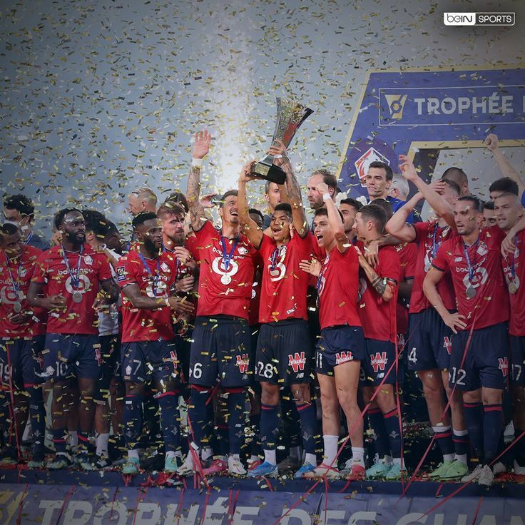

WELCOME TO LOSC
Lille Olympique Sporting Club, more commonly known as LOSC, is a professional football club based in Lille, northern France. Founded in 1944, the club competes in Ligue 1, the top division of French football. It is known to its supporters as Les Dogues. This website explores the club's history, matches, achievements and much more.
